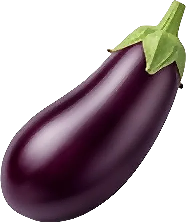

Aubergine

Chair fondante qui boit l’huile ; star de la ratatouille et du caviar d’aubergine.
- Saison : juin, juillet, août, septembre
- Pleine saison : juillet, août
- Famille botanique : Solanacées
Histoire
Originaire de l’Inde et d’Asie du Sud-Est, l’aubergine a été diffusée autour de la Méditerranée par les Arabes au Moyen Âge, d’abord en Espagne. Longtemps regardée avec méfiance, elle s’installe dans le sud de la France au XVIIᵉ et au XVIIIᵉ siècle, avant de devenir un pilier de la cuisine provençale.
Origine et régions de production
L’aubergine française pousse sous le soleil du Sud et sous abri :
- Provence-Alpes-Côte d’Azur
- Occitanie
- Nouvelle-Aquitaine
Bienfaits
Légère et fondante, l’aubergine gagne à être cuisinée avec peu de matière grasse :
- Peu calorique : Environ 25 kcal/100 g, à condition de maîtriser l’huile, qu’elle absorbe comme une éponge.
- Fibres : Elles favorisent la satiété et le transit.
- Antioxydants dans la peau : La peau violette contient des anthocyanes : inutile de l’éplucher.
- Potassium : Participe à l’équilibre hydrique.
Variétés
- Violette de Barbentane : Longue et violet foncé, la classique provençale.
- Graffiti : Striée de mauve et de blanc, chair fine.
- Ronde de Valence : Ronde, violet clair, idéale farcie.
- Blanche : En forme d’œuf, chair douce.
- Longue de Chine : Fine, peu de graines, cuit très vite.
Conserver sans gaspiller
- Conservation : Dans un endroit frais, hors du frigo si possible : 4 à 5 jours.
- Congélation : Crue, elle devient spongieuse. Grillée ou en caviar : jusqu’à 6 mois.
- Rien ne se jette : Une aubergine un peu fripée finit en caviar d’aubergine ou en moussaka. La peau grillée parfume un bouillon.